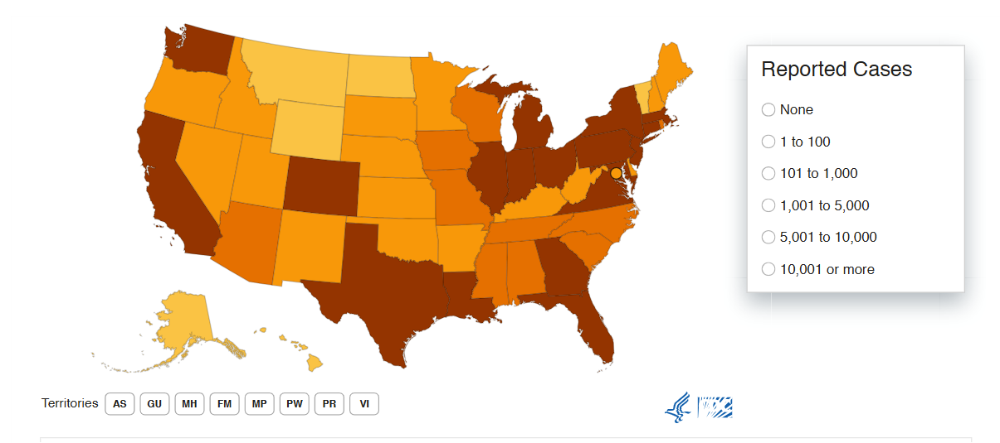

library(tidyverse)
library(usmap)
library(plotly)
library(gt)
library(shiny)
theme_set(theme_minimal() + theme(legend.position = "bottom"))region_population_df =
read.table(file = "data/region_population.txt", header = TRUE, sep = "\t", quote = "\"", fill = TRUE) |>
janitor::clean_names() |>
mutate(
year = str_replace(year, "2023 \\(provisional\\)", "2023"),
year = str_replace(year, "2024 \\(provisional and partial\\)", "2024")) |>
mutate(residence_census_region = str_extract(residence_census_region, "(?<=: ).*"))
region_population_df =
region_population_df[!grepl("Total", region_population_df$notes), ]
region_joint_df =
region_population_df |>
select(residence_census_region, year_code, deaths, population) |>
group_by(residence_census_region, year_code) |>
summarise(
total_population_per_year = sum(population, na.rm = TRUE),
total_deaths_per_year = sum(deaths, na.rm = TRUE),
total_death_rate = total_deaths_per_year / total_population_per_year * 1000) |>
ungroup() |>
slice(-n()) In this part, we will analyze the death situation in four regions in the US from 2020 to 2023. Before we start, we will elaborate the definition of four regions provided by CDC, which are west, midwest, south and northeast.
Here are the definition of four regions:
northeast <- data.frame(
Region = "Northeast",
State = c("Connecticut", "Maine", "Massachusetts", "New Hampshire",
"New Jersey", "New York", "Pennsylvania", "Rhode Island", "Vermont"),
Abbreviation = c("CT", "ME", "MA", "NH", "NJ", "NY", "PA", "RI", "VT"),
Code = c(9, 23, 25, 33, 34, 36, 42, 44, 50)
)
midwest <- data.frame(
Region = "Midwest",
State = c("Illinois", "Indiana", "Iowa", "Kansas", "Michigan", "Minnesota",
"Missouri", "Nebraska", "North Dakota", "Ohio", "South Dakota", "Wisconsin"),
Abbreviation = c("IL", "IN", "IA", "KS", "MI", "MN", "MO", "NE", "ND", "OH", "SD", "WI"),
Code = c(17, 18, 19, 20, 26, 27, 29, 31, 38, 39, 46, 55)
)
south <- data.frame(
Region = "South",
State = c("Alabama", "Arkansas", "Delaware", "District of Columbia", "Florida", "Georgia",
"Kentucky", "Louisiana", "Maryland", "Mississippi", "North Carolina", "Oklahoma",
"South Carolina", "Tennessee", "Texas", "Virginia", "West Virginia"),
Abbreviation = c("AL", "AR", "DE", "DC", "FL", "GA", "KY", "LA", "MD", "MS", "NC", "OK",
"SC", "TN", "TX", "VA", "WV"),
Code = c(1, 5, 10, 11, 12, 13, 21, 22, 24, 28, 37, 40, 45, 47, 48, 51, 54)
)
west <- data.frame(
Region = "West",
State = c("Alaska", "Arizona", "California", "Colorado", "Hawaii", "Idaho",
"Montana", "Nevada", "New Mexico", "Oregon", "Utah", "Washington", "Wyoming"),
Abbreviation = c("AK", "AZ", "CA", "CO", "HI", "ID", "MT", "NV", "NM", "OR", "UT", "WA", "WY"),
Code = c(2, 4, 6, 8, 15, 16, 30, 32, 35, 41, 49, 53, 56)
)
region_data <- rbind(northeast, midwest, south, west)
region_data |>
gt(groupname_col = "Region") |>
tab_header(
title = "US Census Regions and States",
subtitle = "Grouped by Region"
) |>
cols_label(
State = "State Name",
Abbreviation = "State Abbreviation",
Code = "State Code"
)| US Census Regions and States | ||
| Grouped by Region | ||
| State Name | State Abbreviation | State Code |
|---|---|---|
| Northeast | ||
| Connecticut | CT | 9 |
| Maine | ME | 23 |
| Massachusetts | MA | 25 |
| New Hampshire | NH | 33 |
| New Jersey | NJ | 34 |
| New York | NY | 36 |
| Pennsylvania | PA | 42 |
| Rhode Island | RI | 44 |
| Vermont | VT | 50 |
| Midwest | ||
| Illinois | IL | 17 |
| Indiana | IN | 18 |
| Iowa | IA | 19 |
| Kansas | KS | 20 |
| Michigan | MI | 26 |
| Minnesota | MN | 27 |
| Missouri | MO | 29 |
| Nebraska | NE | 31 |
| North Dakota | ND | 38 |
| Ohio | OH | 39 |
| South Dakota | SD | 46 |
| Wisconsin | WI | 55 |
| South | ||
| Alabama | AL | 1 |
| Arkansas | AR | 5 |
| Delaware | DE | 10 |
| District of Columbia | DC | 11 |
| Florida | FL | 12 |
| Georgia | GA | 13 |
| Kentucky | KY | 21 |
| Louisiana | LA | 22 |
| Maryland | MD | 24 |
| Mississippi | MS | 28 |
| North Carolina | NC | 37 |
| Oklahoma | OK | 40 |
| South Carolina | SC | 45 |
| Tennessee | TN | 47 |
| Texas | TX | 48 |
| Virginia | VA | 51 |
| West Virginia | WV | 54 |
| West | ||
| Alaska | AK | 2 |
| Arizona | AZ | 4 |
| California | CA | 6 |
| Colorado | CO | 8 |
| Hawaii | HI | 15 |
| Idaho | ID | 16 |
| Montana | MT | 30 |
| Nevada | NV | 32 |
| New Mexico | NM | 35 |
| Oregon | OR | 41 |
| Utah | UT | 49 |
| Washington | WA | 53 |
| Wyoming | WY | 56 |
For detailed information, you could browse this official website. Here is the definition released by CDC
To begin with, we will show the trend of total deaths rate in the four regions from 2020 to 2023 as a general overview in several plots.
region_year_trend_tileplot_data =
region_population_df |>
select(residence_census_region, year_code, deaths, population) |>
filter(year_code == 2020 | year_code == 2021 | year_code == 2022 | year_code == 2023) |>
group_by(residence_census_region, year_code) |>
summarise(
total_population_per_year = sum(population, na.rm = TRUE),
total_deaths_per_year = sum(deaths, na.rm = TRUE),
death_rate = total_deaths_per_year / total_population_per_year * 1000) |>
ungroup()
region_year_trend_tileplot <- plot_ly(
data = region_year_trend_tileplot_data,
x = ~year_code,
y = ~residence_census_region,
z = ~death_rate,
type = "heatmap",
colorscale = list(
list(0, "lightblue"),
list(1, "darkblue")
),
reversescale = FALSE,
colorbar = list(title = "Death Rate (per 1000)")
) %>%
layout(
title = list(
text = "Death Rate Heatmap by Region (2020-2023)",
x = 0.5,
font = list(size = 16, face = "bold")
),
xaxis = list(
title = "Year",
tickvals = c(2020, 2021, 2022, 2023),
titlefont = list(size = 12),
tickfont = list(size = 10)
),
yaxis = list(
title = "Region",
titlefont = list(size = 12),
tickfont = list(size = 10)
)
)
region_year_trend_tileplotAs we could see, the darker the color, the higher the death rate. From the heatmap, we could see that the death rate in the Mideast Census Region in 2020 and 2021 and the death rate in the South Census Region in 2021 are relatively higher. And the death rate in the West Census Region from 2020 to 2023 is relatively lower.
JAVA: changed into a more detailed version
To dig deeper what happened in the four regions from 2020 to 2023, we will show the monthly trend of mortality rate for total deaths in details.
region_month_totaldeath_df =
read.table(file = "data/region_month_total_death.txt", header = TRUE, sep = "\t", quote = "\"", fill = TRUE) |>
janitor::clean_names() |>
mutate(residence_census_region = str_extract(residence_census_region, "(?<=: ).*")) |>
separate(month_code, into = c("year_code", "months"), sep = "/", remove = FALSE) |>
mutate(year_code = as.numeric(year_code)) |>
filter(year_code == 2020 | year_code == 2021 | year_code == 2022 | year_code == 2023) |>
mutate(month_code_date = ym(month_code)) |>
select(-notes, -month, -population, -crude_rate, -months) |>
left_join(region_joint_df, by = c("year_code", "residence_census_region")) |>
select(-month_code, -total_death_rate) |>
mutate(month_death_rate = deaths / total_population_per_year * 10000)
plot_month_totaldeath =
plot_ly(
region_month_totaldeath_df,
x = ~month_code_date,
y = ~month_death_rate,
color = ~residence_census_region,
type = "scatter",
mode = "lines"
) %>%
layout(
title = "Trends in Total Mortality Rate across Month by Regions (2020-2023)",
xaxis = list(title = "Month"),
yaxis = list(title = "Mortality Rate (per 10000)"),
legend = list(
title = list(text = "Region"),
orientation = "h",
x = 0.5,
y = -0.2,
xanchor = "center"
)
)
plot_month_totaldeathHere are the faced versions of the month trend of total death rate in the four regions from 2020 to 2023 for a more detailed comparison.
plot_month_totaldeath_facet <- region_month_totaldeath_df %>%
split(.$residence_census_region) %>%
lapply(function(df) {
plot_ly(
df,
x = ~month_code_date,
y = ~month_death_rate,
type = "scatter",
mode = "lines",
name = unique(df$residence_census_region)
) %>%
layout(
xaxis = list(title = "Month"),
yaxis = list(title = "Mortality Rate"),
title = list(text = paste0("Region: ", unique(df$residence_census_region)))
)
}) %>%
subplot(nrows = ceiling(length(unique(region_month_totaldeath_df$residence_census_region)) / 2), shareX = TRUE, shareY = TRUE) %>%
layout(
title = "Trends in Total Death Rate across Month by Regions (2020-2023)",
legend = list(
orientation = "h",
x = 0.5,
y = -0.2,
xanchor = "center"
)
)
plot_month_totaldeath_facetFor the monthly total death rate, we could see that it is relatively lowest in West Census Region from 2020 to 2023 and relatively highest in Midwest Census Region for most of the time from 2020 to 2023.
I think most of you in this two regions will raise a question: why the total death rate in Midwest Census Region is relatively higher than other regions? And, why the total rate in West Census Region is obviously lowest? Is this because there are different disease patterns in different regions? If so, what kind of disease or which body system will be the main reason for the high total death rate in each of the Census Regions? Or, is this because of the different climate conditions in different regions?
Without knowing other underlying factors, we could not give a conclusion. But, we could still try to find some clues from the data we have. Now, we will show you the different distribution of death causes in the four regions by state and year.
JAVA:
Besides, as you could notice, there is a peak in the total death rate in April, 2020 in Northeast Census Region. What’s more, there are 3 peaks of death rate in winter from 2020 to 2023 in all regions. So, what happened? As we all know, it is COVID-19.
Therefore, we could generate one hypothesis: The disease is first epidemic in some states in Northeast Census Region. The disease may be then widely spread to other regions in the US.
To verify this hypothesis, we have searched some data. For the peak in April, 2020, here is a report related to reflect the serious situation in Northeast Region.
JAVA: which state in this region higher mortality rate of COVID-19?
Here is the report released by CDC 
Besides, the disease have highest death rate in winter. This is because the disease is more likely to spread in winter.
In this case, I assume most of you will be curious about the actual isolated trend of COVID-19 in the four regions. So, I will show you the trend of COVID-19 in the four regions from 2020 to 2023.
region_month_12cause_df =
read.table(file = "data/region_month_12cause.txt", header = TRUE, sep = "\t", quote = "\"", fill = TRUE) |>
janitor::clean_names() |>
mutate(residence_census_region = str_extract(residence_census_region, "(?<=: ).*")) |>
rename(cause_list = ucd_icd_10_113_cause_list,
cause_list_code = ucd_icd_10_113_cause_list_code) |>
separate(month_code, into = c("year_code", "month"), sep = "/", remove = FALSE) |>
mutate(year_code = as.numeric(year_code)) |>
filter(year_code == 2020 | year_code == 2021 | year_code == 2022 | year_code == 2023) |>
select(-notes, -month, -population, -crude_rate) |>
left_join(region_joint_df, by = c("year_code", "residence_census_region")) |>
mutate(month_code_date = ym(month_code)) |>
select(-month_code)
region_month_12cause_GR113_137_df =
region_month_12cause_df |>
filter(cause_list_code == "GR113-137") |>
mutate(GR113_137_death_rate = deaths / total_population_per_year * 10000)
plot_month_GR113_137 =
plot_ly(
region_month_12cause_GR113_137_df,
x = ~month_code_date,
y = ~GR113_137_death_rate,
color = ~residence_census_region,
type = "scatter",
mode = "lines"
) %>%
layout(
title = "Mortality Rate Trend of COVID-19 (2020-2023)",
xaxis = list(title = "Month"),
yaxis = list(title = "Mortality Rate (per 100,000)"),
legend = list(title = list(text = "Region"),
orientation = "h",
x = 0.5,
y = -0.2,
xanchor = "center"
)
)
plot_month_GR113_137And this one is a faced version of the trend of COVID-19 in the four regions from 2020 to 2023 by month.
plot_month_GR113_137_facet <- region_month_12cause_GR113_137_df %>%
split(.$residence_census_region) %>%
lapply(function(df) {
plot_ly(
df,
x = ~month_code_date,
y = ~GR113_137_death_rate,
type = "scatter",
mode = "lines",
name = unique(df$residence_census_region)
) %>%
layout(
xaxis = list(title = "Month"),
yaxis = list(title = "Mortality Rate"),
title = list(text = paste0("Region: ", unique(df$residence_census_region)))
)
}) %>%
subplot(nrows = ceiling(length(unique(region_month_12cause_GR113_137_df$residence_census_region)) / 2), shareX = TRUE, shareY = TRUE) %>%
layout(
title = "Faced Mortality Rate Trend of COVID-19 (2020-2023)",
legend = list(
orientation = "h",
x = 0.5,
y = -0.2,
xanchor = "center"
)
)
plot_month_GR113_137_facetFor better understanding, I will provide a timeline of the COVID-19 situation in the US released by CDC. Here is the timeline
It seems that the rules of COVID-19 we just mentioned are consistent with these plots.
Also, will you be curious about that if you have COVID-19, what will make you die if not directly from COVID-19? What system will be the most likely to be affected by COVID? For these questions, we will compare the trend of COVID-19 deaths with the trend of the top causes of death in the four regions to give the most likely answer.
Below are the trend of the top causes of death in the four regions from 2020 to 2023. In this part, we could answer this question: what are the difference of the same diseases between the four regions? (Here we only have some diseases, whose trend is obvious and is worthy explaining)
region_month_12cause_df =
read.table(file = "data/region_month_12cause.txt", header = TRUE, sep = "\t", quote = "\"", fill = TRUE) |>
janitor::clean_names() |>
mutate(residence_census_region = str_extract(residence_census_region, "(?<=: ).*")) |>
rename(cause_list = ucd_icd_10_113_cause_list,
cause_list_code = ucd_icd_10_113_cause_list_code) |>
separate(month_code, into = c("year_code", "month"), sep = "/", remove = FALSE) |>
mutate(year_code = as.numeric(year_code)) |>
filter(year_code == 2020 | year_code == 2021 | year_code == 2022 | year_code == 2023) |>
select(-notes, -month, -population, -crude_rate) |>
left_join(region_joint_df, by = c("year_code", "residence_census_region")) |>
mutate(month_code_date = ym(month_code)) |>
select(-month_code)
region_month_12cause_GR113_010_df =
region_month_12cause_df |>
filter(cause_list_code == "GR113-010") |>
mutate(GR113_010_death_rate = deaths / total_population_per_year * 100000)
plot_month_GR113_010 =
plot_ly(
region_month_12cause_GR113_010_df,
x = ~month_code_date,
y = ~GR113_010_death_rate,
color = ~residence_census_region,
type = "scatter",
mode = "lines"
) %>%
layout(
title = "Trends in Septicemia across Month by Regions (2018-2024)",
xaxis = list(title = "Month"),
yaxis = list(title = "Mortality Rate (per 100,000)"),
legend = list(title = list(text = "Region"),
orientation = "h",
x = 0.5,
y = -0.2,
xanchor = "center"
)
)
plot_month_GR113_010Here we could find that there are some differences in the trend of Septicemia across the four regions. The death rate in the Northeast Census Region is relatively higher than other regions at most of time from 2020 to 2023. And the death rate in the West Census Region is relatively lower. This means the disease is more likely to cause death in the Northeast Census Region than in other regions.
region_month_12cause_GR113_019_df =
region_month_12cause_df |>
filter(cause_list_code == "GR113-019") |>
mutate(GR113_019_death_rate = deaths / total_population_per_year * 100000)
plot_month_GR113_019 =
plot_ly(
region_month_12cause_GR113_019_df,
x = ~month_code_date,
y = ~GR113_019_death_rate,
color = ~residence_census_region,
type = "scatter",
mode = "lines"
) %>%
layout(
title = "Trends in Malignant Neoplasms across Month by Regions (2018-2024)",
xaxis = list(title = "Month"),
yaxis = list(title = "Mortality Rate (per 100,000)"),
legend = list(title = list(text = "Region"),
orientation = "h",
x = 0.5,
y = -0.2,
xanchor = "center"
)
)
plot_month_GR113_019For rigorous comparison, we will do some statistical tests.
stas_sig1_019 =
kruskal.test(GR113_019_death_rate ~ residence_census_region, data = region_month_12cause_GR113_019_df)
knitr::kable(
data.frame(
Statistic = stas_sig1_019$statistic,
DF = stas_sig1_019$parameter,
P_Value = format.pval(stas_sig1_019$p.value, digits = 10)
),
caption = "Kruskal-Wallis Test Results for malignant neoplasms"
)| Statistic | DF | P_Value | |
|---|---|---|---|
| Kruskal-Wallis chi-squared | 145.1179 | 3 | < 0.0000000000000002220446 |
Since p-value < 0.05, we keep going to do post-hoc test.
stats_sig2_019 =
pairwise.wilcox.test(
region_month_12cause_GR113_019_df$GR113_019_death_rate,
region_month_12cause_GR113_019_df$residence_census_region,
p.adjust.method = "bonferroni"
)
result_df <- as.data.frame(as.table(stats_sig2_019$p.value))
knitr::kable(
result_df,
caption = "Pairwise Comparisons Using Wilcoxon Rank Sum Test with Bonferroni Adjustment",
col.names = c("Region 1", "Region 2", "P-Value")
)| Region 1 | Region 2 | P-Value |
|---|---|---|
| Northeast | Midwest | 0.0000000 |
| South | Midwest | 0.0000000 |
| West | Midwest | 0.0000000 |
| Northeast | Northeast | NA |
| South | Northeast | 0.0771349 |
| West | Northeast | 0.0000000 |
| Northeast | South | NA |
| South | South | NA |
| West | South | 0.0000000 |
This shows that there are significant differences in the death rate of Malignant Neoplasms across the four regions, except between South and Northeast Census Region. Specifically, the death rate in the West Census Region is significantly lower than in the other three regions. And the death rate in the Midwest Census Region is relatively higher than in the other three regions.
There are always no big difference between Northeast and South Census Region. Why? Is this because of similar sicioeconomic status or similar climate conditions? Or, is this because of similar disease patterns? These questions remain to be answered.
region_month_12cause_GR113_046_df =
region_month_12cause_df |>
filter(cause_list_code == "GR113-046") |>
mutate(GR113_046_death_rate = deaths / total_population_per_year * 100000)
plot_month_GR113_046 =
plot_ly(
region_month_12cause_GR113_046_df,
x = ~month_code_date,
y = ~GR113_046_death_rate,
color = ~residence_census_region,
type = "scatter",
mode = "lines"
) %>%
layout(
title = "Trends in Diabetes across Month by Regions (2018-2024)",
xaxis = list(title = "Month"),
yaxis = list(title = "Mortality Rate (per 100,000)"),
legend = list(title = list(text = "Region"),
orientation = "h",
x = 0.5,
y = -0.2,
xanchor = "center"
)
)
plot_month_GR113_046region_month_12cause_GR113_052_df =
region_month_12cause_df |>
filter(cause_list_code == "GR113-052") |>
mutate(GR113_052_death_rate = deaths / total_population_per_year * 100000)
plot_month_GR113_052 =
plot_ly(
region_month_12cause_GR113_052_df,
x = ~month_code_date,
y = ~GR113_052_death_rate,
color = ~residence_census_region,
type = "scatter",
mode = "lines"
) %>%
layout(
title = "Trends in Alzheimer disease across Month by Regions (2018-2024)",
xaxis = list(title = "Month"),
yaxis = list(title = "Mortality Rate (per 100,000)"),
legend = list(title = list(text = "Region"),
orientation = "h",
x = 0.5,
y = -0.2,
xanchor = "center"
)
)
plot_month_GR113_052region_month_12cause_GR113_054_df =
region_month_12cause_df |>
filter(cause_list_code == "GR113-054") |>
mutate(GR113_054_death_rate = deaths / total_population_per_year * 100000)
plot_month_GR113_054 =
plot_ly(
region_month_12cause_GR113_054_df,
x = ~month_code_date,
y = ~GR113_054_death_rate,
color = ~residence_census_region,
type = "scatter",
mode = "lines"
) %>%
layout(
title = "Trends in Disease of Heart across Month by Regions (2018-2024)",
xaxis = list(title = "Month"),
yaxis = list(title = "Mortality Rate (per 100,000)"),
legend = list(title = list(text = "Region"),
orientation = "h",
x = 0.5,
y = -0.2,
xanchor = "center"
)
)
plot_month_GR113_054According to the plot, we could see there are some differences between the four regions. For testing the statistical significance, we will do a Kruskal-Wallis test to test the difference in the death rate of Disease of Heart across the four regions.
stas_sig1 =
kruskal.test(GR113_054_death_rate ~ residence_census_region, data = region_month_12cause_GR113_054_df)
knitr::kable(
data.frame(
Statistic = stas_sig1$statistic,
DF = stas_sig1$parameter,
P_Value = format.pval(stas_sig1$p.value, digits = 10)
),
caption = "Kruskal-Wallis Test Results for Disease of Heart"
)| Statistic | DF | P_Value | |
|---|---|---|---|
| Kruskal-Wallis chi-squared | 114.0951 | 3 | < 0.0000000000000002220446 |
Since p-value < 0.05, we keep going to do post-hoc test.
stats_sig2 =
pairwise.wilcox.test(
region_month_12cause_GR113_054_df$GR113_054_death_rate,
region_month_12cause_GR113_054_df$residence_census_region,
p.adjust.method = "bonferroni"
)
result_df <- as.data.frame(as.table(stats_sig2$p.value))
knitr::kable(
result_df,
caption = "Pairwise Comparisons Using Wilcoxon Rank Sum Test with Bonferroni Adjustment",
col.names = c("Region 1", "Region 2", "P-Value")
)| Region 1 | Region 2 | P-Value |
|---|---|---|
| Northeast | Midwest | 0.0005641 |
| South | Midwest | 0.0007282 |
| West | Midwest | 0.0000000 |
| Northeast | Northeast | NA |
| South | Northeast | 1.0000000 |
| West | Northeast | 0.0000000 |
| Northeast | South | NA |
| South | South | NA |
| West | South | 0.0000000 |
As we could see, except between South and Northeast Census Region, there are all significant differences in the death rate of Disease of Heart in the other three pairs. Specifically, West Census Region has a significantly lower death rate of Disease of Heart than the other three regions. Why did this happen? Is it because of the different climate conditions in different regions? Or is it because of the clinical treatment level in different regions?
region_month_12cause_GR113_070_df =
region_month_12cause_df |>
filter(cause_list_code == "GR113-070") |>
mutate(GR113_070_death_rate = deaths / total_population_per_year * 100000)
plot_month_GR113_070 =
plot_ly(
region_month_12cause_GR113_070_df,
x = ~month_code_date,
y = ~GR113_070_death_rate,
color = ~residence_census_region,
type = "scatter",
mode = "lines"
) %>%
layout(
title = "Trends in Cerebrovascular Diseases across Month by Regions (2018-2024)",
xaxis = list(title = "Month"),
yaxis = list(title = "Mortality Rate (per 100,000)"),
legend = list(title = list(text = "Region"),
orientation = "h",
x = 0.5,
y = -0.2,
xanchor = "center"
)
)
plot_month_GR113_070region_month_12cause_GR113_076_df =
region_month_12cause_df |>
filter(cause_list_code == "GR113-076") |>
mutate(GR113_076_death_rate = deaths / total_population_per_year * 100000)
plot_month_GR113_076 =
plot_ly(
region_month_12cause_GR113_076_df,
x = ~month_code_date,
y = ~GR113_076_death_rate,
color = ~residence_census_region,
type = "scatter",
mode = "lines"
) %>%
layout(
title = "Trends in Influenza and Pneumonia across Month by Regions (2018-2024)",
xaxis = list(title = "Month"),
yaxis = list(title = "Mortality Rate (per 100,000)"),
legend = list(title = list(text = "Region"),
orientation = "h",
x = 0.5,
y = -0.2,
xanchor = "center"
)
)
plot_month_GR113_076region_month_12cause_GR113_082_df =
region_month_12cause_df |>
filter(cause_list_code == "GR113-082") |>
mutate(GR113_082_death_rate = deaths / total_population_per_year * 100000)
plot_month_GR113_082 =
plot_ly(
region_month_12cause_GR113_082_df,
x = ~month_code_date,
y = ~GR113_082_death_rate,
color = ~residence_census_region,
type = "scatter",
mode = "lines"
) %>%
layout(
title = "Trends in Chronic Lower Respiratory Diseases across Month by Regions (2018-2024)",
xaxis = list(title = "Month"),
yaxis = list(title = "Mortality Rate (per 100,000)"),
legend = list(title = list(text = "Region"),
orientation = "h",
x = 0.5,
y = -0.2,
xanchor = "center"
)
)
plot_month_GR113_082region_month_12cause_GR113_097_df =
region_month_12cause_df |>
filter(cause_list_code == "GR113-097") |>
mutate(GR113_097_death_rate = deaths / total_population_per_year * 100000)
plot_month_GR113_097 =
plot_ly(
region_month_12cause_GR113_097_df,
x = ~month_code_date,
y = ~GR113_097_death_rate,
color = ~residence_census_region,
type = "scatter",
mode = "lines"
) %>%
layout(
title = "Trends in Nephritis, Nephrotic Syndrome and Nephrosis across Month by Regions (2018-2024)",
xaxis = list(title = "Month"),
yaxis = list(title = "Mortality Rate (per 100,000)"),
legend = list(title = list(text = "Region"),
orientation = "h",
x = 0.5,
y = -0.2,
xanchor = "center"
)
)
plot_month_GR113_097We could notice that in four regions, there are some peaks in the death rate of disease in winter from 2020 to 2023. Here we wonder that whether there are some association between the peaks in the death rate of these diseases and the peaks in the death rate of COVID-19.
However, we could find the peaks in COVID-19 plot is mainly centralized in winter from 2020, 2021 and 2022. However, the peaks in most of these diseases is centralized in every winter from 2020 to 2023.
Does this mean that the death from Septicemia is more likely to be caused by other diseases, which is more likely to be epidemic in winter, rather than COVID-19?
To answer these question, we need to look at the heatmap and the coefficiency between leading diseases. Here is the heatmap and related analysis. Correlation Insights on Disease Mortality: A Heatmap Analysis